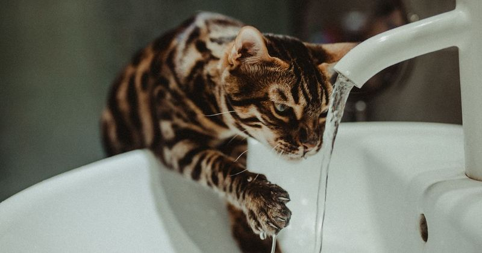
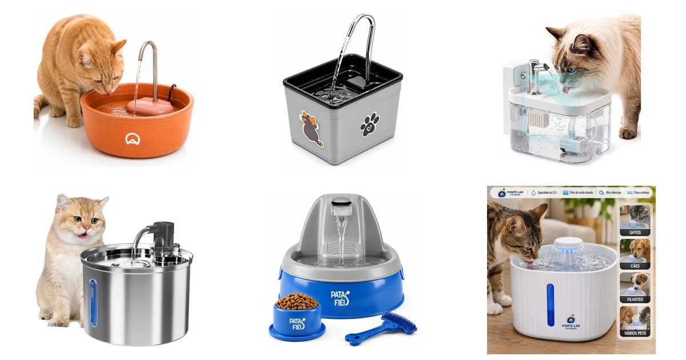
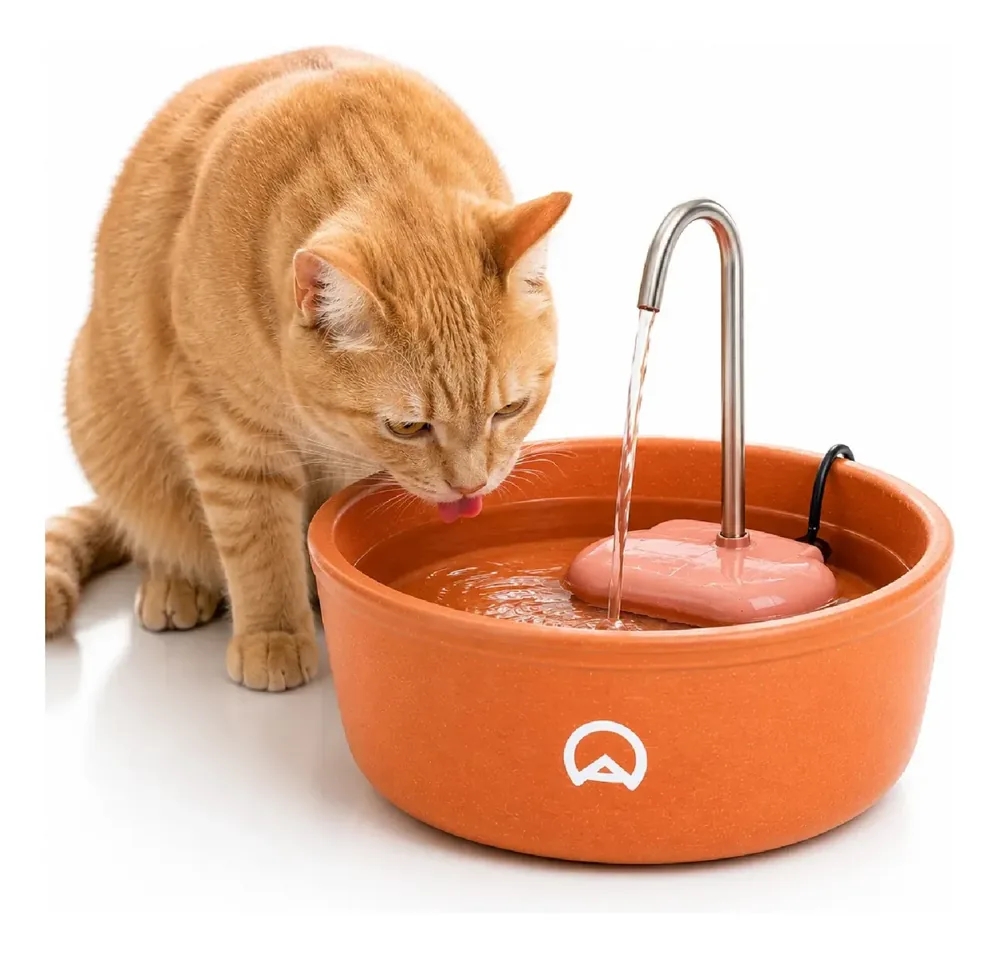
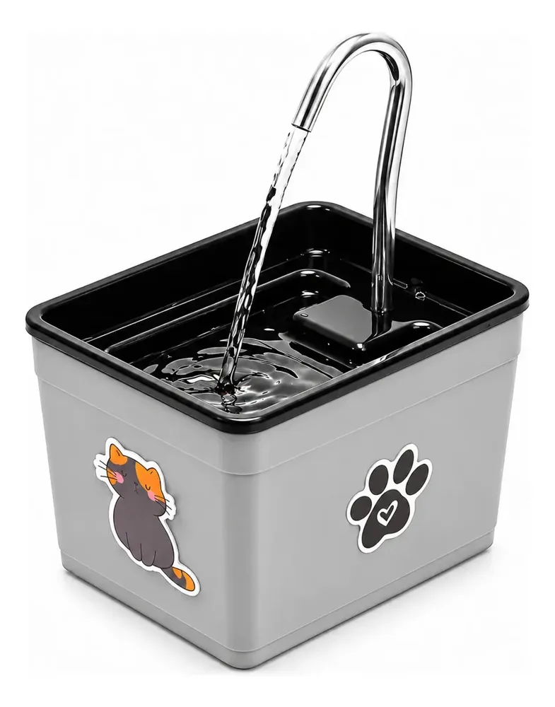
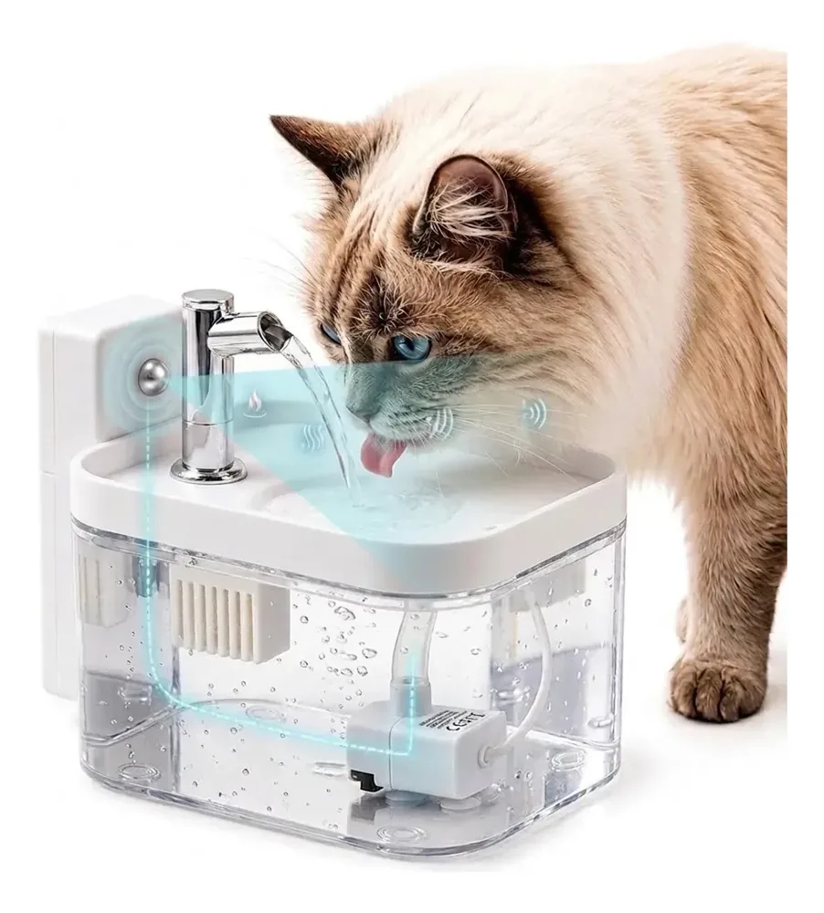
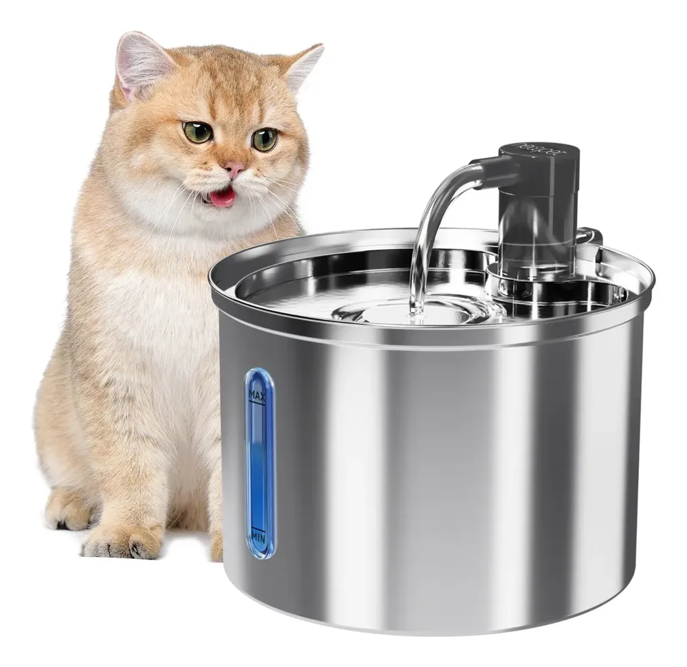
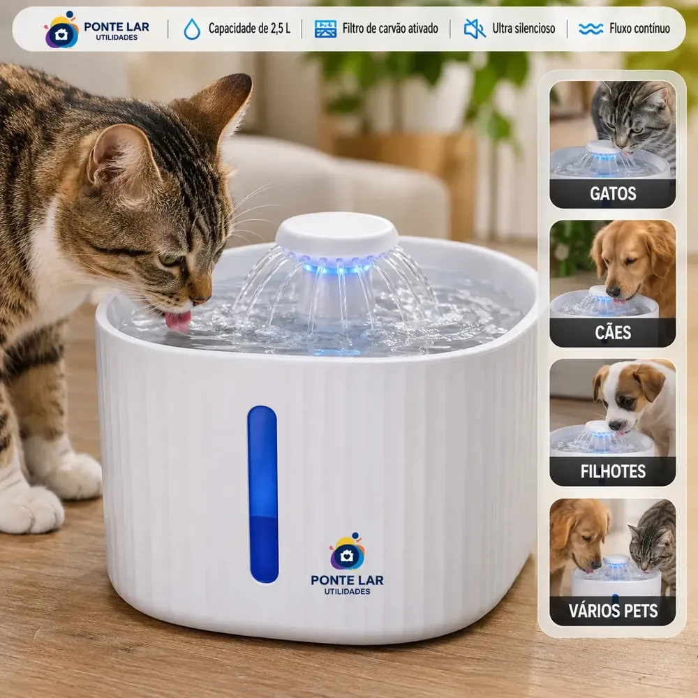
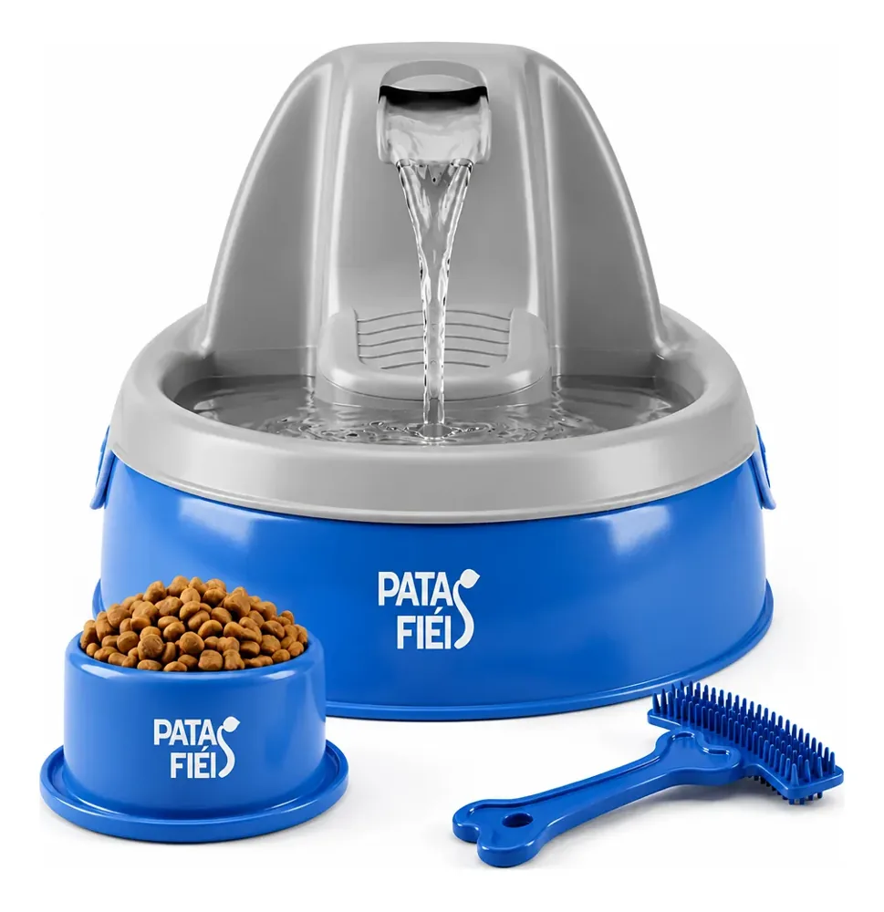

O melhor bebedouro automático para pet, entre os seis que comparamos, é a fonte de cerâmica Amicus Aqua Clay 2,5 L: tem filtro de carvão ativado, é silenciosa, pesada o bastante para não tombar e soma nota 4,8 em 456 avaliações e mais de mil vendas, por R$ 170,90 no Mercado Livre (preço de 13/11/2026). Com orçamento curto, o AGBE AG-200 custa R$ 42,50, é o mais vendido da lista (nota 4,8 em 2.429 avaliações) e não tem refil para trocar. Para colocar longe da tomada, a fonte sem fio com sensor sai por R$ 92,15, e para cachorro ou casa com vários pets, a Newpet de inox com 3 litros custa R$ 129,89.
Amicus Aqua Clay 2,5 L, fonte de cerâmica com nota 4,8 em 456 avaliações.Link de afiliado — sem custo extra para você.
Ver preço no Mercado Livre →Escolha rápida
- Melhor no geral, para gatos: Amicus Aqua Clay 2,5 L de cerâmica (R$ 170,90, nota 4,8 em 456 avaliações)
- Melhor custo-benefício: AGBE AG-200 1,8 L (R$ 42,50, sem refil, nota 4,8 em 2.429 avaliações)
- Sem fio, longe da tomada: fonte com sensor e bateria recarregável (R$ 92,15 no Pix)
- Para cachorro e vários pets: Newpet inox 3 L (R$ 129,89, a maior da lista)
- Com dois filtros: Ponte Lar 2,5 L (R$ 126)
- Para gato de pelo longo: Patas Fiéis Pelos Livres 2,5 L (R$ 179,90, com comedouro e rasqueadeira)
A tabela coloca lado a lado as seis fontes de água que selecionamos no Mercado Livre. Os preços foram consultados em 13/11/2026 e mudam com frequência, principalmente em ofertas relâmpago e na Black Friday, então confira no link antes de comprar.
| Modelo | Material | Capacidade | Preço | Filtro | Energia | Nota no ML | Indicado para | |
|---|---|---|---|---|---|---|---|---|
| Amicus Aqua Clay | Cerâmica | 2,5 L | R$ 170,90 | Carvão ativado | USB | 4,8 (456) | Gatos, 1 a 2 pets | Ver preço |
| AGBE AG-200 | Plástico | 1,8 L | R$ 42,50 | Sem filtro | Bivolt | 4,8 (2.429) | Gato, orçamento curto | Ver preço |
| Fonte sem fio com sensor | Plástico transparente | 1,5 L | R$ 92,15 no Pix | 1 filtro | Bateria recarregável USB | 4,7 (204) | Longe da tomada, gatos e cães pequenos | Ver preço |
| Newpet inox NP895 | Aço inox | 3 L | R$ 129,89 | 1 filtro | USB 5V | 5,0 (1) | Cachorro, vários pets | Ver preço |
| Ponte Lar 2,5 L | Plástico | 2,5 L | R$ 126 | 2 filtros | USB bivolt | 5,0 (1) | Gatos e cães pequenos | Ver preço |
| Patas Fiéis Pelos Livres | Plástico | 2,5 L | R$ 179,90 | Carvão ativado | USB bivolt (sem adaptador) | Sem avaliações | Gato de pelo longo | Ver preço |

Antes da marca, defina três coisas: quem vai beber (gato, cachorro pequeno ou cachorro grande), quantos pets dividem a fonte e onde ela vai ficar. Um bebedouro para gatos pode ser menor e mais silencioso; para cachorro, a capacidade vem primeiro.
| Situação | Escolha | Por quê |
|---|---|---|
| Um ou dois gatos, quer o mais confiável | Amicus Aqua Clay | Cerâmica pesada e fresca, silenciosa e com muitas avaliações positivas |
| Quer gastar pouco e não quer trocar filtro | AGBE AG-200 | Custa menos de R$ 45 e não tem refil |
| Não tem tomada perto do lugar ideal | Fonte sem fio com sensor | Funciona com bateria e só liga quando o pet se aproxima |
| Cachorro ou três ou mais pets | Newpet inox 3 L | Maior reservatório da lista e inox, fácil de higienizar |
| Gato persa, maine coon ou outro de pelo longo | Patas Fiéis Pelos Livres | Formato que reduz o contato dos pelos com a água |
| Água com muito cloro ou impurezas | Ponte Lar 2,5 L | Dois filtros em vez de um |
Ainda em dúvida sobre o material? O comparativo de bebedouro inox, cerâmica ou plástico explica as diferenças de higiene, durabilidade e temperatura da água.
Os dados de cada modelo vêm do anúncio no Mercado Livre e das avaliações publicadas por compradores. Não testamos as fontes; veja como escolhemos.

É a fonte de água para gatos mais bem avaliada da lista entre as que têm volume de avaliações. A tigela é de cerâmica, então pesa, não tomba com facilidade, não absorve cheiro como o plástico e mantém a água fresca, que é justamente o que os compradores mais elogiam. A água corre por uma bica de metal, passa por filtro de carvão ativado e a bomba funciona por USB.
| Preço | R$ 170,90 (de R$ 179,90) ou 12x de R$ 16,89. Sai a R$ 160,90 com o cupom por seguir a loja |
|---|---|
| Material | Cerâmica |
| Capacidade | 2,5 litros |
| Filtro | 1 filtro de carvão ativado |
| Energia | USB |
| Medidas | 23,5 x 23,5 x 19,5 cm |
| Avaliações | 4,8 de 5 em 456 avaliações, 202 comentários e +1.000 vendidos |
| Vendedor e garantia | Vendas Vale Eletro Shop (MercadoLíder, +10 mil vendas), envio Full; 3 meses de garantia de fábrica |
O resumo das opiniões do Mercado Livre destaca a fonte por ser "silenciosa e fácil de limpar, além de manter a água fresca, o que incentiva os animais a beberem mais".
"É grande, super silencioso, o neve chega a dormir próximo à fonte, meus mimis amaram e assim que liguei já foram bebendo água. Fiquei bem feliz já que eles só bebiam água na pia do banheiro."
★★★★★ comprador, Mercado Livre · 35 pessoas acharam útil"Ótima qualidade. Recomendo limpar bem o produto antes do uso, principalmente o canudo, pois vi muitas impurezas de fabricação. Não vem com limpador de canudos..."
★★★★★ comprador, Mercado Livre · 12 pessoas acharam útil🐾 Amicus Aqua Clay 2,5 L de cerâmica: veja o preço de hoje.
Ver preço no Mercado LivreLink de afiliado: podemos receber uma comissão por compras feitas através deste link, sem custo adicional para você.

É o bebedouro automático mais barato e mais vendido da lista: aparece como 3º mais vendido em Bebedouros e Comedouros no Mercado Livre e tem mais de 2 mil avaliações. A água sai por uma torneira de alumínio em arco, que atrai gatos que gostam de beber da pia. Não usa filtro, então não há custo mensal com refil; em troca, a limpeza precisa ser mais frequente.
| Preço | R$ 42,50 (de R$ 99,90, 57% de desconto) |
|---|---|
| Material | Plástico, com torneira de alumínio que não enferruja |
| Capacidade | 1,8 litro |
| Filtro | Não tem (sem custo de refil) |
| Energia | Bivolt 127/220V |
| Cores | Cinza, preta e rosa |
| Avaliações | 4,8 de 5 em 2.429 avaliações, 1.104 comentários e +1.000 vendidos |
| Vendedor | Loja oficial AGBE (+50 mil vendas), envio Full |
"O lucky gostou, vamos ver se para de pedir pra beber água no lavatório do banheiro. Material bom, bombinha super silenciosa."
★★★★★ comprador, Mercado Livre · 13 pessoas acharam útil"É prático, fácil de montar e a gatinha gostou. Não precisa filtro, achei bom. Porém, único detalhe é o tamanho pequeno."
★★★★★ comprador, Mercado Livre · 7 pessoas acharam útil💧 AGBE AG-200, o bebedouro mais vendido da lista: veja o preço de hoje.
Ver preço no Mercado LivreLink de afiliado: podemos receber uma comissão por compras feitas através deste link, sem custo adicional para você.

A grande vantagem é não depender de tomada: a fonte tem bateria recarregável por USB e um sensor de movimento que liga a torneira quando o pet se aproxima, economizando energia. Dá para colocar no lugar que o gato prefere, mesmo longe da parede. O reservatório transparente mostra o nível da água sem abrir.
| Preço | R$ 92,15 no Pix em oferta relâmpago (de R$ 169,90) ou R$ 97 em outros meios |
|---|---|
| Material | Plástico transparente, torneira de metal |
| Capacidade | 1,5 litro |
| Filtro | 1 filtro interno |
| Energia | Bateria recarregável por USB, bivolt; sensor de movimento |
| Medidas | 16 x 11,5 x 16 cm |
| Avaliações | 4,7 de 5 em 204 avaliações, 95 comentários e +500 vendidos |
| Vendedor | Loja oficial Pet Shop Amigão (+10 mil vendas), envio Full |
O resumo das opiniões do Mercado Livre diz que a fonte é "amplamente elogiada por seu funcionamento silencioso e eficiente" e pela "facilidade de uso sem fio e a opção de colocá-lo em qualquer parte da casa". O anúncio indica para gatos de todos os portes e cães de pequeno porte.
"Funciona conforme anunciado, automática com sensor, sem fio, recarregável, capacidade boa, com filtro, recipiente transparente. Das automáticas essa está com o melhor preço..."
★★★★★ comprador, Mercado Livre · 6 pessoas acharam útil"Não gostei muito, fica descarregando toda hora, tenho que deixar na força."
★★★★★ comprador, Mercado Livre🔋 Fonte sem fio com sensor de movimento: veja o preço de hoje.
Ver preço no Mercado LivreLink de afiliado: podemos receber uma comissão por compras feitas através deste link, sem custo adicional para você.

É a maior fonte da lista, com 3 litros, e a única de aço inox: não arranha, não absorve cheiro e é a mais fácil de higienizar. Por isso é a indicação para cachorro, casa com três ou mais pets ou para quem passa o dia fora. Tem visor de nível, base antiderrapante e funciona por USB (5V, 1W).
| Preço | R$ 129,89 (de R$ 199,86) ou 12x de R$ 12,84. Sai a R$ 125,89 com o cupom por seguir a loja |
|---|---|
| Material | Aço inox 304, com peças em PP |
| Capacidade | 3 litros |
| Filtro | 1 filtro |
| Energia | USB, 5V 1A, potência de 1W |
| Medidas e peso | 19 cm de diâmetro, 13 cm de altura (embalagem de 20 x 20 x 16 cm); 0,78 kg |
| Avaliações | 5,0 em 1 avaliação (anúncio novo) |
| Vendedor e garantia | Loja oficial New Pet (+50 mil vendas); 30 dias de garantia de fábrica |
🐶 Newpet inox 3 L, a maior fonte da lista: veja o preço de hoje.
Ver preço no Mercado LivreLink de afiliado: podemos receber uma comissão por compras feitas através deste link, sem custo adicional para você.

Fonte em cascata de 2,5 litros com dois filtros, o dobro dos outros modelos, o que ajuda em regiões com água de torneira mais carregada de cloro ou impurezas. Tem dois modos de fluxo, base antiderrapante e alimentação USB bivolt. O anúncio indica para gatos e cães de pequeno porte.
| Preço | R$ 126 (de R$ 230, 45% de desconto) ou 12x de R$ 12,45 |
|---|---|
| Material | Plástico |
| Capacidade | 2,5 litros |
| Filtro | 2 filtros |
| Energia | USB, bivolt 127/220V; dois modos de fluxo |
| Medidas | 20 x 18 x 15 cm |
| Avaliações | 5,0 em 1 avaliação (3 vendidos) |
| Vendedor | Loja oficial I Love Pen (+250 mil vendas), envio Full |
"Adoro e meu baby york também, né. E água geladinha."
★★★★★ comprador, Mercado Livre💧 Ponte Lar 2,5 L com dois filtros: veja o preço de hoje.
Ver preço no Mercado LivreLink de afiliado: podemos receber uma comissão por compras feitas através deste link, sem custo adicional para você.

A água desce em cascata, e o formato Pelos Livres reduz o contato dos pelos do peito e do pescoço com a água, pensado para gatos de pelagem volumosa. O reservatório aceita uma garrafa PET para aumentar a autonomia, e o kit vem com comedouro antiformiga de 80 ml e uma rasqueadeira.
| Preço | R$ 179,90 ou 12x de R$ 17,78 |
|---|---|
| Material | Plástico livre de BPA, base antiderrapante |
| Capacidade | 2,5 litros, segundo o título e a descrição (a ficha técnica do anúncio diz 2 L), com adaptação para garrafa PET |
| Filtro | 1 filtro de carvão ativado |
| Energia | Cabo USB, bivolt 127/220V, bomba em 6V; não vem adaptador de tomada |
| Na caixa | Fonte, filtro, comedouro antiformiga de 80 ml e rasqueadeira |
| Medidas | 30 x 30 x 22 cm |
| Avaliações | Ainda sem avaliações neste anúncio |
| Vendedor e garantia | Patas Fiéis (MercadoLíder Platinum, +50 mil vendas); 30 dias de garantia do vendedor |
🐱 Patas Fiéis Pelos Livres com comedouro e rasqueadeira: veja o preço de hoje.
Ver preço no Mercado LivreLink de afiliado: podemos receber uma comissão por compras feitas através deste link, sem custo adicional para você.
Uma estimativa comum é de 50 a 100 ml de água por quilo de peso ao dia, variando com calor, atividade e tipo de ração. Um gato de 4 kg bebe algo entre 200 e 400 ml, e uma fonte de 1,5 a 2,5 litros dura vários dias. Já um cachorro de 20 kg pode passar de 1 litro por dia, e aí a capacidade pesa mais na escolha da fonte de água para cachorro do que o material:
O inox não arranha nem absorve cheiro e é o mais fácil de higienizar. A cerâmica pesa mais, não tomba e mantém a água fresca, mas quebra se cair. O plástico é o mais barato e leve, porém risca com o tempo, e os riscos acumulam sujeira, por isso pede limpeza mais caprichada. Na lista, a Newpet é de inox, a Amicus de cerâmica e as outras quatro são de plástico. As diferenças estão detalhadas no comparativo de bebedouro inox, cerâmica ou plástico.
Precisa também de comedouro? Veja comedouro x bebedouro automático: você precisa dos dois?, o melhor comedouro automático para cachorro e os melhores alimentadores automáticos para gatos.
Selecionamos seis fontes de água no Mercado Livre, em 13/11/2026, que cobrem os principais perfis de compra: o mais confiável, o mais barato, o sem fio, o maior para cachorro, o com filtragem dupla e o para gato de pelo longo. Para cada uma registramos preço, material, capacidade, filtro, alimentação, avaliações, reputação do vendedor e garantia direto na página do anúncio, e citamos comentários de compradores quando havia. Não testamos as fontes fisicamente nem medimos ruído ou vazão. Quando o anúncio tem informação conflitante, como a capacidade da Patas Fiéis, dizemos isso no texto. A ordem considera avaliações de compradores, custo-benefício e quantas casas o modelo atende.
Para a maioria dos gatos, a Amicus Aqua Clay de cerâmica é a fonte mais segura de acertar: estável, silenciosa e com centenas de avaliações positivas. Se o orçamento é curto, o AGBE AG-200 entrega o essencial por R$ 42,50. Sem tomada por perto, vá de fonte sem fio com sensor; com cachorro ou vários pets, escolha a Newpet inox de 3 litros. Seja qual for o modelo, limpeza semanal e troca de filtro em dia fazem mais diferença na hidratação do pet do que a marca.
Entre os seis que comparamos, a fonte de cerâmica Amicus Aqua Clay 2,5 L: filtro de carvão ativado, silenciosa, estável e com nota 4,8 em 456 avaliações, por R$ 170,90 no Mercado Livre em 13/11/2026. A opção mais barata é o AGBE AG-200, por R$ 42,50, com nota 4,8 em 2.429 avaliações.
Todas as seis fontes da lista custam menos de R$ 180. Até R$ 300, a Amicus Aqua Clay (R$ 170,90) é a mais bem avaliada; até R$ 100, o AGBE AG-200 (R$ 42,50) e a fonte sem fio com sensor (R$ 92,15 no Pix) são as melhores opções.
A fonte Newpet de aço inox com 3 litros, a maior da lista, por R$ 129,89. Para cães pequenos, a Ponte Lar 2,5 L e a fonte sem fio com sensor também servem. Para cachorro grande, mantenha um pote comum de apoio além da fonte.
Para a maioria dos gatos, sim: a água corrente e filtrada costuma atrair mais o gato do que a água parada, o que ajuda na hidratação. Vários compradores das fontes desta lista relatam que os gatos passaram a beber mais e pararam de pedir água na pia. Para cães, a fonte ajuda a manter a água fresca, mas o volume é o que mais importa.
As bombas desses modelos são pequenas e, segundo os compradores, a Amicus Aqua Clay, o AGBE AG-200 e a fonte sem fio com sensor são silenciosas. Ruído alto costuma indicar nível de água baixo ou bomba suja, que se resolvem com reabastecimento e limpeza.
A recomendação geral é trocar o filtro de carvão ativado a cada 30 a 60 dias, ou antes se a água ficar turva, com cheiro ou com menos fluxo. A limpeza completa do bebedouro deve ser semanal, e a água trocada a cada 1 ou 2 dias.
Sim. A fonte com sensor da lista tem bateria recarregável por USB e liga a água só quando o pet se aproxima, então pode ficar longe da tomada. Há relato de comprador de que a bateria descarrega rápido, por isso é bom deixar o carregador por perto.
Uma fonte de 2,5 a 3 litros atende dois ou três pets pequenos. Para casa com muitos gatos, ou gatos que não gostam de dividir, o ideal é ter mais de um ponto de água em cômodos diferentes.
Mais detalhes sobre materiais em bebedouro inox x cerâmica.
Escrito por Nildo Alves para o Smart Pet Gadgets. Preços e especificações vêm dos anúncios no Mercado Livre em 13/11/2026 e podem mudar. Veja nossa política editorial e como verificamos as fontes citadas neste artigo.
Nildo Alves — curadoria de produtos pet no Smart Pet Gadgets. Pesquisa e compara produtos para cães e gatos, cruzando especificações de fabricante com boas práticas veterinárias e dados de mercado.
Sobre o Smart Pet Gadgets · Contato · Política editorial e de afiliados